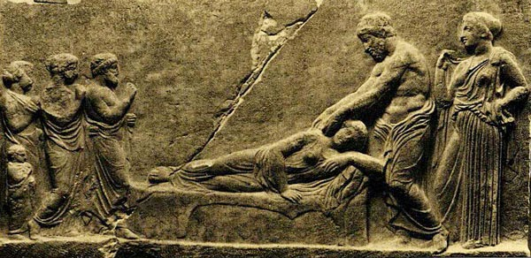

To cure sometimes, to treat often, and to
comfort always

It appears to me a most excellent thing
for the physician to cultivate
Prognosis
Hippocrates, 400 BCE
Around 2400 years ago a Greek physician called Hippocrates wrote a book
on Prognosis. At that time doctors had few effective treatments to
offer their patients, so providing accurate information on their
prognosis was useful. Hippocrates' book sold well, and he has been
famous ever since.
These days we have many effective medical and surgical treatments. But,
there are many more conditions than cures. So the question, "What's the
prognosis?" is still popular.
This app is intended to help people for whom prognosis is an issue.
But, I don't expect it to make me as famous and well off as
Hippocrates!
Also, unlike Hippocrates, this is not a tutorial in
reputation management for the medical profession. (Read the
introduction to his book to understand why the quotation above is only
a short
piece from its introduction.)
Prognosis is difficult to understand, and can be misleading. So this
app aims to help people:
Ask their doctors the "right" questions about prognosis.
Understand what the numbers do and do not mean.
Use the information to inform your approach to making decisions
about treatments (and perhaps life in general):
Plan for the worst.
Hope for the best.
Bet on the treatment
option with the
lowest odds.
Getting a prognosis can be unpleasant, and is often not needed. So, if
you are worried about what you might find here, close the app now.
Those who are curious, should begin with the next tab: